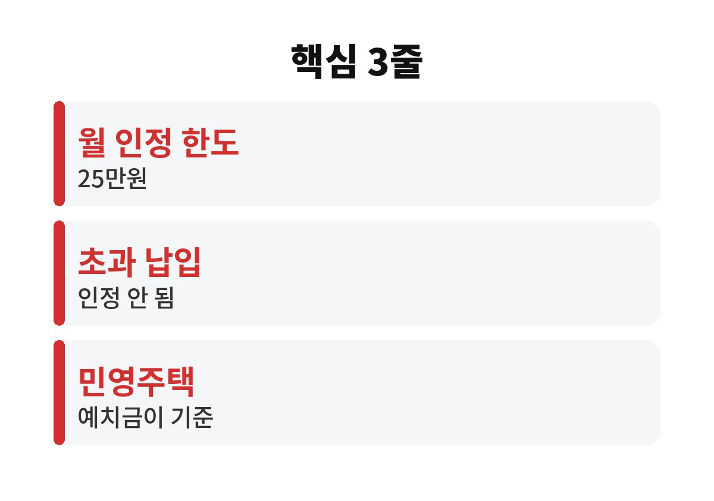

주택청약 납입 인정 금액은 한 달에 최대 25만원까지다. 그 이상 넣어도 청약 순위나 순차제 계산에는 더 쌓이지 않는다는 뜻이다.
매달 25만원이 넘게 붓고 있는 직장인이라면 초과분이 정말 헛돈인지, 지금 바꿔야 할 게 있는지 끝까지 봐 두는 게 좋다.
예전에는 한 달 납입 인정 금액이 10만원이었다. 2024년 11월 25일부터는 이 한도가 25만원으로 올랐다. 공공분양에서 낙첨이 반복될 때 납입 횟수와 금액을 따지는 순차제 경쟁에서, 더 많이 인정받을 수 있게 된 것이다.
그래서 요즘은 "월 25만원 채워야 하나?" 하고 고민하는 사람이 많다. 반대로 이미 월 30만원, 50만원씩 자동이체를 걸어 둔 사람도 있다. 이 경우가 문제다. 25만원을 넘는 금액은 통장에 쌓이긴 하지만 주택청약 납입 인정에는 잡히지 않는다.
헛돈이라고 단정하기는 어렵다. 청약통장은 해지하지 않는 한 내 돈이 그대로 있고, 이자도 붙는다. 다만 청약 점수나 순위에 도움이 되는 건 25만원까지라는 점은 분명하다. 초과분은 사실상 이자가 낮은 저축으로 묶여 있는 셈이다.
그래서 비교해 볼 필요가 있다. 청약통장 금리가 다른 예금이나 적금보다 낮다면, 25만원을 넘는 금액은 굳이 청약통장에 둘 이유가 줄어든다. 급하게 쓸 일이 생겼을 때 해지하지 않고 꺼내기도 어렵다. 생활비와 비상금이 빠듯하다면 더 신경 써야 한다.
다르다. 민영주택은 가점제 또는 추첨제로 뽑는데, 청약 때 필요한 건 지역과 면적에 맞는 예치금 기준을 채웠는지다. 매달 얼마를 넣었는지보다 통장에 얼마가 들어 있는지가 중요하다는 말이다.
그래서 노리는 집이 민영 아파트라면, 예치금 기준만 맞춘 뒤에는 월 납입을 줄이거나 멈추는 것도 선택지가 된다. 반대로 공공분양을 노린다면 순차제 때문에 납입 인정을 최대한 채우는 쪽이 유리할 수 있다. 어떤 집을 노리느냐에 따라 답이 갈리는 셈이다.

먼저 은행 앱에서 내 월 납입액과 납입 횟수를 확인한다. 월 25만원 이상 자동이체가 걸려 있다면 초과분이 얼마인지 계산해 본다. 그다음 내가 노리는 주택이 공공인지 민영인지 정하고, 필요한 예치금 기준을 청약홈에서 찾아 비교한다.
점검이 끝나면 선택은 단순하다. 공공분양 위주라면 25만원에 맞춰 유지하고, 민영 위주이고 예치금이 이미 충분하다면 초과 납입을 줄여 그 돈을 다른 저축이나 투자 쪽으로 돌려 본다. 정답은 사람마다 다르니 내 상황에 맞춰 결정하면 된다.
혹시 지금 월 얼마씩 청약통장에 넣고 계신가요? 댓글로 남겨 주시면 같이 이야기해 봐요. 도움이 되셨다면 구독해 두시면 다음 글도 바로 받아보실 수 있어요.
※ 본 글은 일반 정보이며 투자 권유가 아닙니다. 제도 내용은 바뀔 수 있으니 청약홈과 은행에서 꼭 확인하세요.